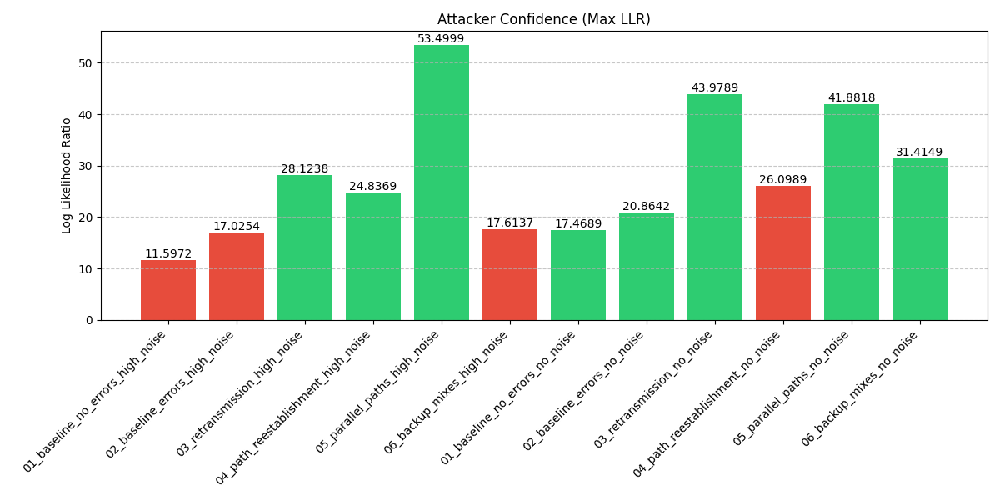
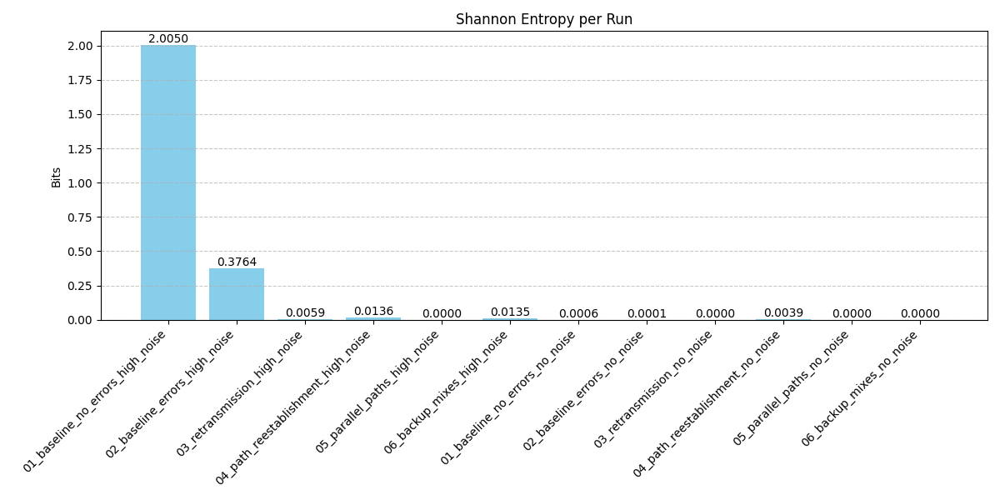

🚀 Loopix Network Analysis Dashboard
📊 Experiment Summary
| name | loss_rate | avg_latency | throughput | diaz_anonymity | shannon_entropy | attacker_confidence | attack_success | attack_success_top2 |
|---|---|---|---|---|---|---|---|---|
| Testrun_20260126_013351_01_baseline_no_errors_high_noise | 77.36% | 2.5425 | 9110 | 0.2089 | 2.005009e+00 | 11.5972 | ❌ NO | ❌ NO |
| Testrun_20260126_014408_02_baseline_errors_high_noise | 80.47% | 2.5307 | 7797 | 0.0392 | 3.763867e-01 | 17.0254 | ❌ NO | ✅ YES |
| Testrun_20260126_015425_03_retransmission_high_noise | 85.23% | 2.5654 | 5872 | 0.0006 | 5.945450e-03 | 28.1238 | ✅ YES | ❌ NO |
| Testrun_20260126_020441_04_path_reestablishment_high_noise | 80.69% | 2.5432 | 7634 | 0.0014 | 1.364386e-02 | 24.8369 | ✅ YES | ❌ NO |
| Testrun_20260126_021458_05_parallel_paths_high_noise | 62.31% | 2.5327 | 15212 | 0.0000 | 7.027256e-18 | 53.4999 | ✅ YES | ❌ NO |
| Testrun_20260126_022515_06_backup_mixes_high_noise | 77.76% | 2.5166 | 8897 | 0.0014 | 1.345945e-02 | 17.6137 | ❌ NO | ❌ NO |
| Testrun_20260126_023532_01_baseline_no_errors_no_noise | 2.16% | 2.5322 | 8505 | 0.0001 | 6.137593e-04 | 17.4689 | ✅ YES | ❌ NO |
| Testrun_20260126_024549_02_baseline_errors_no_noise | 17.27% | 2.5366 | 7475 | 0.0000 | 6.307175e-05 | 20.8642 | ✅ YES | ❌ NO |
| Testrun_20260126_025606_03_retransmission_no_noise | 16.33% | 2.5175 | 7426 | 0.0000 | 2.015082e-10 | 43.9789 | ✅ YES | ✅ YES |
| Testrun_20260126_030623_04_path_reestablishment_no_noise | 17.27% | 2.5304 | 7336 | 0.0004 | 3.911508e-03 | 26.0989 | ❌ NO | ✅ YES |
| Testrun_20260126_031640_05_parallel_paths_no_noise | 14.92% | 2.5547 | 7576 | 0.0000 | 3.789229e-12 | 41.8818 | ✅ YES | ❌ NO |
| Testrun_20260126_032657_06_backup_mixes_no_noise | 1.94% | 2.5483 | 8799 | 0.0000 | 2.488801e-09 | 31.4149 | ✅ YES | ❌ NO |
🛡️ Anonymity (Diaz)

Higher is better. Measures the entropy of the anonymity set.
🎯 Attacker Confidence

Higher bars = Attacker is more sure. Green = Success, Red = Fail.
🎲 Shannon Entropy

Higher is better. Absolute measure of uncertainty (in bits).
📉 Packet Loss Rate

Lower is better. High loss indicates network failures or active attacks.
⏱️ Average Latency

Lower is generally better, but trade-off with anonymity exists.